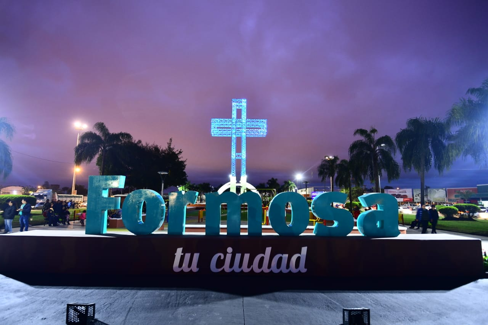

Formosa, oficialmente Provincia de Formosa, es una de las 23 provincias de la República Argentina (tal como figura en su Constitución provincial).A su vez, es uno de los 24 estados autogobernados que conforman el país y uno de los 24 distritos electorales legislativos nacionales. Su capital y ciudad más poblada es la homónima Formosa. Está ubicada en el noreste del país, en la región del Norte Grande Argentino, limitando al norte con el río Pilcomayo que la separa de Paraguay, al este con el Rio Paraguay que la separa de nuevo de Paraguay, al sur con los ríos Bermejo y Teuco que la separan de Chaco, y al oeste con Salta, mediante un meridiano.
Formosa deriva del español antiguo fermosa, que significa «hermosa» y que habría sido dado por los conquistadores españoles, que con el pasar del tiempo a esa zona se la comenzó a nombrar como vuelta Formosa La isla de Taiwan, también conocida como Formosa (Ilha Formosa), recibió este nombre de los exploradores portugueses. Esta isla se encuentra en las antípodas de la Provincia de Formosa.
formosa tiene 3 grandes rios como límites naturales. Al norte, el Rio Pilcomayo la separa de los departamentos Boquerón, Presidente Hayes y Central de la República del Paraguay. Al este, el Río Paraguay es el límite con el Departamento de Ñeembucúde la República del Paraguay. Al sur, el Río Bermejo es el límite con la Provincia del Chaco Finalmente al oeste la línea Barilari, coincidente con el meridiano 60º 20' 17' O, separa a Formosa de la provincia de Salta.
El actual territorio de la Provincia estaba habitado en el siglo XVI, de este a oeste, por las siguientes etnias: la llamada por los guaraníes de lospayaguás, qom'leks, pilagás, nivaklés y wichis, a estas se sumaban en pequeñas poblaciones mixtas. Estas etnias eran llamadas peyorativamente guaycurú por los avá (o guaraníes) que guerreaban contra ellas y trataban de expandirse a lo largo de los ríos Pilcomayo y Bermejo. Los primeros Europeos de los que se sabe llegaron a pisar el suelo actualmente formoseño fueron los integrantes de las expediciones en 1528, se considera que es desde esa época que la zona recibió el nombre español Arcaico de Formosa (Hermosa) en recuerdo de una vuelta del río Paraguay con hermoso paisaje, excelente pesca y cazar y muy buen terreno para acampar y fondear navíos. La existencia de poblaciones originarias hizo imposible el asentamiento estable de poblaciones europeas o criollas hasta casi fines del siglo XIX.
Himno marcha a Formosa El Himno-marcha a Formosa (también llamado Marcha-himno a Formos ) es el canto oficial de la provincia de Formosa. Fue compuesto en 1954por Armando de Vita y Lacerra; la música le fue agregada por el mayor Víctor Rival, director de la banda de música del Regimiento de Infantería de Monte 29 de Formosa.
Integra la zona geográfica conocida como Región Chaqueña. Posee una uniformidad de relieve con una suave inclinación noroeste-sudeste los ríos y arroyos aunque en ocasiones divagantes y formando esteros siguen también la dirección noroeste-sudeste el bioma casi exclusivo es el del bosque chaqueño.